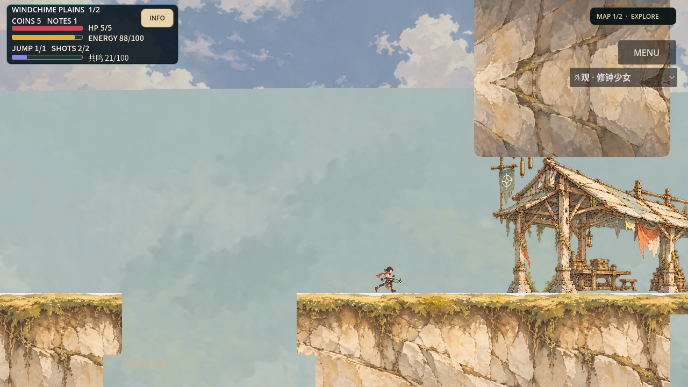
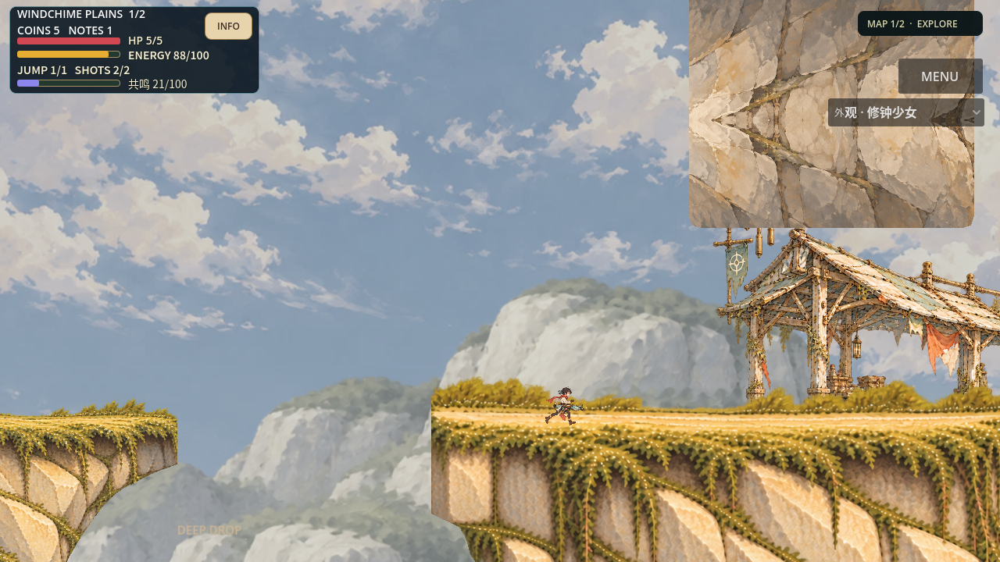
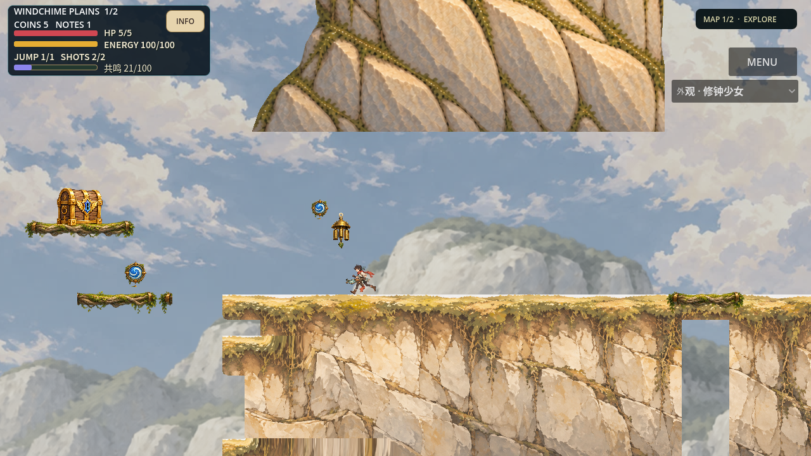
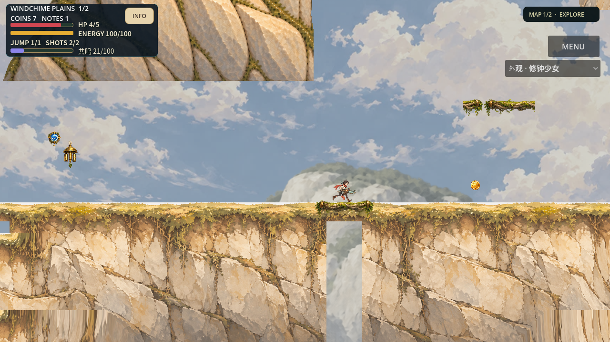
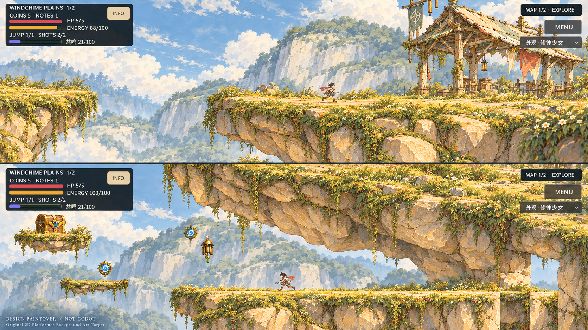
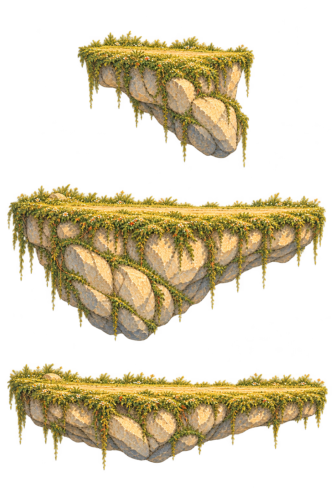

同Seed joint-recoil-01、正常1280×720相机与真实角色。旧版与v4局部路线可比较；不是整区艺术通过。第二Seed07只做结构/碰撞合同，没有艺术扩产。




独立审查 REWORK · 恢复入口与明确边界 · 根因和实际验证
4530实际路线tick / 75.5秒，正常60fps；1280×720、48k立体声。没有听音/真人/设备认可。以下源在当前工作区build，未嵌入Git；准确路径与SHA见delivery。


无用户最终艺术认可、真人/设备验证、听音或正式发布。